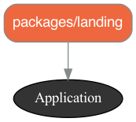
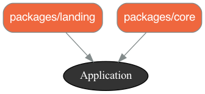

Rails 7.0 Using Packages (Packwerk gem)
Organizing Rails Apps with Packages

Organizing Code
Gems and Engines have long been used to organize Ruby and Rails code into workable small units.
Shopify has introduced a new system called ‘packages’ - they use the packwerk gem to help us. In fact, it is designed to make it easy to take large (and likely highly coupled) large codebase and move toward ‘packages’ self-contained (or have explicit dependencies). Ideally the code is in small enough units to help us keep the context in mind as we work on it.
I found it initially difficult to understand packwerk in the context of a complex codebase. So instead I built a new ‘play’ app and then moved each piece into a package. Hopefully, this will inspire you to use Gem, Engines or Packages to clarify dependencies and make the code a logical until that is easy to reason about.
Ruby and Rails Environment
Using Rails 7 & Ruby 3.1.2 - I found that it is important to update my ruby environment - so before we start this is what I didn’t remove errors:
# I've had the error several times without updating:
# /Users/btihen/.rbenv/versions/3.1.0/lib/ruby/gems/3.1.0/gems/bundler-2.3.8/lib/bundler/rubygems_ext.rb:18:in `source': uninitialized constant Gem::Source (NameError)
#
# (defined?(@source) && @source) || Gem::Source::Installed.new
# ^^^^^^^^
# Did you mean? Gem::SourceList
# this seems to fix it:
# https://bundler.io/guides/bundler_2_upgrade.html
# https://stackoverflow.com/questions/4859600/bundler-throws-uninitialized-constant-gemsilentui-nameerror-error-after-upgr
rbenv local 3.1.2
gem update --system
gem install bundler
gem install rails
rbenv rehash
Rails Project - Simple Blog
Since my other projects are using esbuild I use that here too
rails new rails_pack -T --database=postgresql --css=bootstrap --javascript=esbuild
cd rails_pack
bin/rails db:create
# add the packwerk (packages) gem
bundle add packwerk
bundle binstub packwerk
# initialize packwerk
bin/packwerk init
# to visualize your package design
bundle add graphwerk
gem 'graphwerk', group: %i[development test]
bundle install
bundle exec rake graphwerk:update
# (or pocky https://github.com/mquan/pocky)
NOTE: to turn a folder into a package - add the file: package.yml in the package folder - this will be described in more detail as we go.
Configure Packages
in config/application.rb add:
config.paths.add 'app/packages', glob: '*/{*,*/concerns}', eager_load: true
So now it might look like:
# config/application.rb
require_relative "boot"
require "rails"
# Pick the frameworks you want:
require "active_model/railtie"
require "active_job/railtie"
require "active_record/railtie"
require "active_storage/engine"
require "action_controller/railtie"
require "action_mailer/railtie"
require "action_mailbox/engine"
require "action_text/engine"
require "action_view/railtie"
require "action_cable/engine"
# require "rails/test_unit/railtie"
# Require the gems listed in Gemfile, including any gems
# you've limited to :test, :development, or :production.
Bundler.require(*Rails.groups)
module RailsPack
class Application < Rails::Application
# Initialize configuration defaults for originally generated Rails version.
config.load_defaults 7.0
# Don't generate system test files.
config.generators.system_tests = nil
# config packages fur packwerk
config.paths.add 'app/packages', glob: '*/{*,*/concerns}', eager_load: true
end
end
Also change app/controllers/application_controller.rb to:
# app/controllers/application_controller.rb
class ApplicationController < ActionController::Base
append_view_path(Dir.glob(Rails.root.join('app/packages/*/views')))
end
Finally, lets create the location for the packages:
mkdir app/packages
Create a Landing Page
We can generate the code using:
bin/rails g controller landing index
You will see it creates the files;
create app/controllers/landing_controller.rb
route get 'landing/index'
invoke erb
create app/views/landing
create app/views/landing/index.html.erb
invoke helper
create app/helpers/landing_helper.rb
So we see it has created a controller, a view and a helper - we will copy this structure into a new package landing using:
mkdir -p app/packages/landing
mkdir -p app/packages/landing/public
mkdir -p app/packages/landing/controllers
mkdir -p app/packages/landing/views
mkdir -p app/packages/landing/helpers
# copy the generated files
mv app/controllers/landing_controller.rb app/packages/controllers/.
mv app/views/landings app/packages/views/landings
mv app/helpers/landing_helper.rb app/packages/helpers/.
copy our package.yml to configure the package
cat <<EOF>> app/packages/landing/package.yml
# Turn on dependency checks for this package
enforce_dependencies: true
# Turn on privacy checks for this package
enforce_privacy: true
# this allows you to modify what your package's public path is within the package
public_path: public/
# A list of this package's dependencies
# Note that packages in this list require their own `package.yml` file
dependencies:
- '.'
EOF
Now finally, the update the routing:
Rails.application.routes.draw do
get 'landing/index'
root "landing#index"
end
lets try the packwerk check to see if we have clearly defined our package:
bin/packwerk check
Lets generate a diagram of our app:
bin/rails graphwerk:update
Now you can open packwerk.png and see the code structure and dependencies.
The application is the rails core.

finally, lets be sure all is working:
bin/rails s
we should be able to get to localhost:3000/ and see our landing page
NOTE: IF YOU GET ERRORS REGARDING CONTROLLER OBJECT NOT FOUND RESTART RAILS!
Core Data / Admin Controlled
most apps need some core data like users, etc. So lets generate this too:
bin/rails g scaffold user full_name email
now that we have generated the files and see the list lets create the package:
# create the package
mkdir -p app/packages/core
# recreate the structure of created files within the package
mkdir -p app/packages/core/public
mkdir -p app/packages/core/controllers
mkdir -p app/packages/core/helpers
mkdir -p app/packages/core/models
mkdir -p app/packages/core/views
# move the generated files into the package
mv app/controllers/users_controller.rb app/packages/core/controllers/.
mv app/helpers/users_helper.rb app/packages/core/helpers/.
mv app/models/user.rb app/packages/core/models/.
mv app/views/users/views/users app/packages/core/views/.
the package config
cat <<EOF> app/packages/core/package.yml
# Turn on dependency checks for this package
enforce_dependencies: true
# Turn on privacy checks for this package
enforce_privacy: true
# this allows you to modify what your package's public path is within the package
public_path: public/
# A list of this package's dependencies
# Note that packages in this list require their own `package.yml` file
dependencies:
- '.'
EOF
update the routes (even though the package is called core - lets make the path called admin since that is who will be managing the settings within this package)
Rails.application.routes.draw do
scope :admin do
resources :users
end
get 'landing/index'
get 'landing', to: 'landing#index'
root 'landing#index' # Defines the root path route ("/")
end
Now that we have created a new model we need to migrate:
bin/rails db:migrate
Perhaps it would be good to keep migrations with packages, like we do with engines. But for now we will let it be.
lets try the packwerk check to see if we have clearly defined our package:
bin/packwerk check
If you have used the default package.yml then all should be good.
Lets update our diagram of our app:
bin/rails graphwerk:update
you should now see both the landing and core module

Lets be sure all is working & we can create a user or two at localhost:3000/admin/users
NOTE: IF YOU GET ERRORS REGARDING CONTROLLER OBJECT NOT FOUND RESTART RAILS!
Adding the Blogs
Now we need to app to allow some activity. Let’s create a blog site. We will create a post & later a comment model. Again we will use a generator and then put everything in its place.
bin/rails g scaffold post content user:references
Now that we have generated standard code lets create the package:
mkdir -p app/packages/blogs
midir -p app/packages/blogs/public
midir -p app/packages/blogs/controllers
midir -p app/packages/blogs/helpers
midir -p app/packages/blogs/models
midir -p app/packages/blogs/views
# and move the files into the package
mv app/controllers/posts_controller.rb app/packages/blogs/controllers/.
mv app/helpers/posts_helpers.rb app/packages/blogs/helpers/.
mv app/models/post.rb app/packages/blogs/models/.
mv app/models/views/posts app/packages/blogs/views/.
and now we need the package.yml file to activate the blogss package:
cat <<EOF> app/packages/blogs/package.yml
# Turn on dependency checks for this package
enforce_dependencies: true
# Turn on privacy checks for this package
enforce_privacy: true
# this allows you to modify what your package's public path is within the package
public_path: public/
# A list of this package's dependencies
# Note that packages in this list require their own `package.yml` file
dependencies:
- '.'
EOF
update the routes (even though the package is called core - lets make the path called admin since that is who will be managing the settings within this package)
Rails.application.routes.draw do
scope 'blogs' do
resources :posts
end
scope 'admin' do
resources :users
end
get 'landing/index'
get 'landing', to: 'landing#index'
root 'landing#index' # Defines the root path route ("/")
end
Now that we have created a new model we need to migrate:
bin/rails db:migrate
Since I don’t want to get fancy with a current_user in the root controller - we can add the following to our new controller in create:
# POST /posts or /posts.json
def create
current_user = User.first
@post = Post.new(post_params.merge(user: current_user))
respond_to do |format|
if @post.save
format.html { redirect_to post_url(@post), notice: 'Post was successfully created.' }
format.json { render :show, status: :created, location: @post }
else
format.html { render :new, status: :unprocessable_entity }
format.json { render json: @post.errors, status: :unprocessable_entity }
end
end
end
lets try the packwerk check to see if we have clearly defined our package:
bin/packwerk check
Hmmm - now we are getting some problems!
- We are access the User from Core, but we haven’t explicitly allow that.
- We depend on Core in Blogs, but we haven’t explicity stated that we want that.
Let’s fix the declared dependencies:
# app/packages/blogs/package.yml
# Turn on dependency checks for this package
enforce_dependencies: true
# Turn on privacy checks for this package
enforce_privacy: true
# this allows you to modify what your package's public path is within the package
public_path: public/
# A list of this package's dependencies
# Note that packages in this list require their own `package.yml` file
dependencies:
- '.'
- 'app/packages/core'
This should fix the declared package dependencies, now lets fix the access problem between the dependencies. The easiest fix is to put whatever we need accessible by other packages in the package’s public folder:
mkdir app/packages/core/public/models
mv app/packages/core/models/user.rb app/packages/core/public/models/.
now bin/packwerk check should be clean
Note: in a real-world complex application there may be too many dependencies to fix all at once. In this case you can run:
bin/packwerk update-deprecations
Now packwerk will ignore the problems and allow you to fix them over-time - this list can be seen in the file: app/packages/blogs/deprecated_references.yml it will look something like:
# This file contains a list of dependencies that are not part of the long term plan for app/packages/blogs.
# We should generally work to reduce this list, but not at the expense of actually getting work done.
#
# You can regenerate this file using the following command:
# bin/packwerk update-deprecations app/packages/blogs
---
app/packages/core:
"::User":
violations:
- privacy
files:
- app/packages/blogs/controllers/posts_controller.rb
- app/packages/blogs/models/post.rb
Lets update our diagram of our app:
bin/rails graphwerk:update
you should now see both the landing and core module

You may notice that everything is dependent on application rails. This is expected for a rails-app.
Lets be sure all is working & we can create a user or two at localhost:3000/blogs/posts
NOTE: IF YOU GET ERRORS REGARDING CONTROLLER OBJECT NOT FOUND RESTART RAILS!
Going further!
To gain more ideas I recommend the book: Package-Based Rails Applications, by Stephan Hagemann (also wrote the book on using engines for modular Rails applications).
In particular, in the book he discusses ways to reduce even the rails dependencies, integrate events, etc for further loose coupling.
Resources
- site - https://github.com/Shopify/packwerk/
- video - https://www.youtube.com/watch?v=olEA157z7kU
- book - https://leanpub.com/package-based-rails-applications
- docs - https://github.com/Shopify/packwerk/blob/main/USAGE.md
- help - https://github.com/Shopify/packwerk/blob/main/TROUBLESHOOT.md
Articles
Bill Tihen
Developer, Data Enthusiast, Educator and Nature’s Friend
very curious – known to explore knownledge and nature